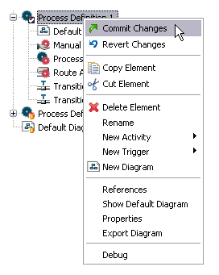
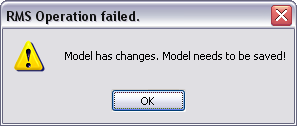
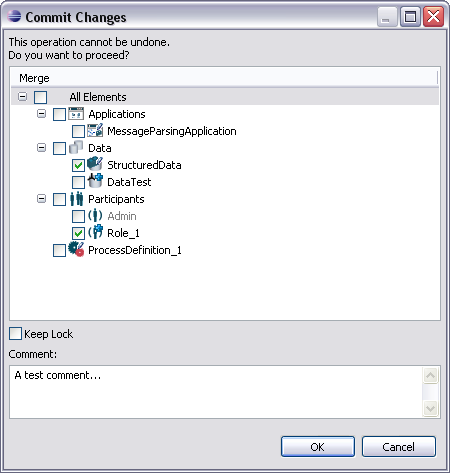
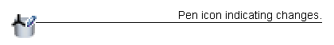
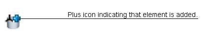
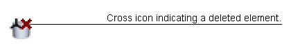
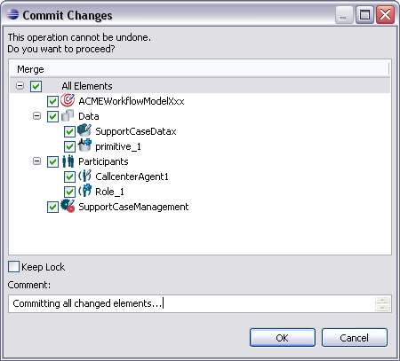
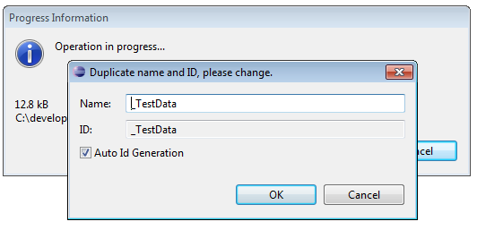

In case a model element is locked and has local changes, these changes can be committed to the subversion repository.
During a commit, the following steps will be performed automatically:
All model element nodes in the model Outline view representing lockable elements provide the option Commit Changes. To commit a change for an element, right-click its node in the Outline view and select Commit Changes.

Figure: Committing Model Element Changes.
Please note that the model has to be saved before this operation. Otherwise a warning dialog opens.

Figure: Warning indicating to save Model first.
After selecting the option to commit, a Commit Changes Dialog opens, where you can select the changes on model elements you like to commit. It displays all changed and thus locked model elements and new elements with checkboxes to select for committing. A checkbox Keep Lock is provided to choose if the locks of the selected elements should be kept after the commit.

Figure: The Commit Changes Dialog.
Overlay icons indicate the sort of changes on elements. The pen icon indicates changes on an element that already existed:

Figure: Changed Model Element.
The plus icon indicates that an element has been added to the model:

Figure: Added Model Element.
The cross icon indicates that an existing element has been deleted from the model:

Figure: Deleted Model Element.
Also an entry field for a commit comment is provided. A commit comment is obligatory, otherwise the OK button is not enabled. Please enter at least 10 characters.
After the OK button is selected, all selected changes will be merged with the model file in the repository. Committing a changed element increments the counter of the element lock file. To cancel the commit select Cancel.
To commit all changes in a model, select the All Elements entry. All elements pertaining to the model and having changes will be selected for committing.

Figure: Commit all Changed Elements in a Model.
Conflicts on IDs might occur during a commit of model elements, for example if a commit results in having two elements with the same ID in the repository. In that case a dialog opens to indicate that a duplicate ID or name exists and to offer to change them directly in appropriate entry fields:

Figure: Dialog to change ID or Name.
After giving the element a new ID and closing this dialog, the commit process continues.